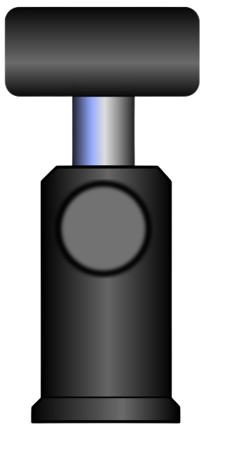
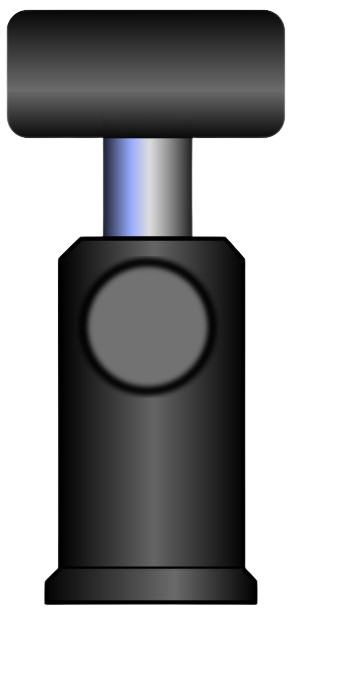

Determining Wavelength Using Diffraction Grating
 


Procedure (Simulation Working)
Procedure (Simulation Working)
- Click on Laser Source button to add the laser in the experimental setup.
- Click on Grating button to place the diffraction grating between laser and screen.
- Click on Screen button to add the observation screen.
- After adding Laser, Grating, and Screen, click on Turn On to start the simulation.
- A diffraction pattern consisting of a central maximum and higher order maxima appears on the screen.
- Adjust the distance between the screen and grating using the slider provided.
- Note the distances between the central (0th order) maximum and S₁ (first order) and S₂ (second order) maxima.
- Click on Add Observation to record the readings in the observation table.
- Change the distance and repeat the above steps to take multiple readings.
5 cm
Observation & Calculation Table
| S. No. | Order (n) | Distance between Screen & Grating L(cm) | Distance of nth maxima from central maxima S(cm) | Angle θ (deg) | Grating Spacing d(cm) | Wavelength λ (nm) |
|---|